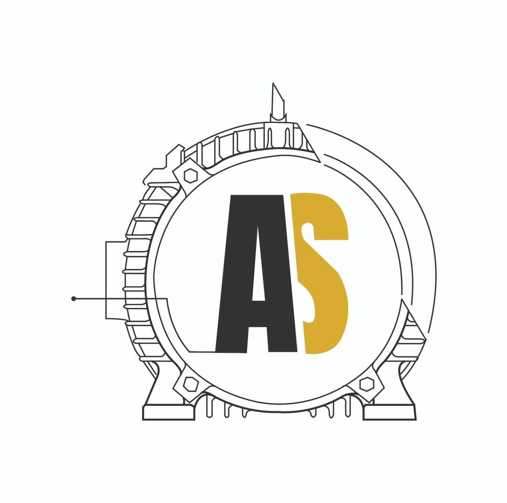

Bobinados Industriales cuenta con más de 50 años de experiencia en el sector, ofreciendo soluciones especializadas en motores industriales, bombas sumergibles, plantas de emergencia, elevadores, módulos AMF y tableros de control. Cada proyecto es realizado bajo altos estándares de calidad, garantizando seguridad, eficiencia y satisfacción para nuestros clientes.